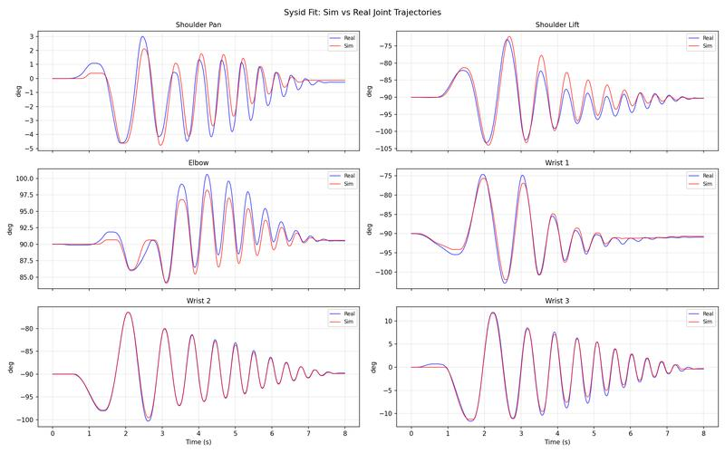
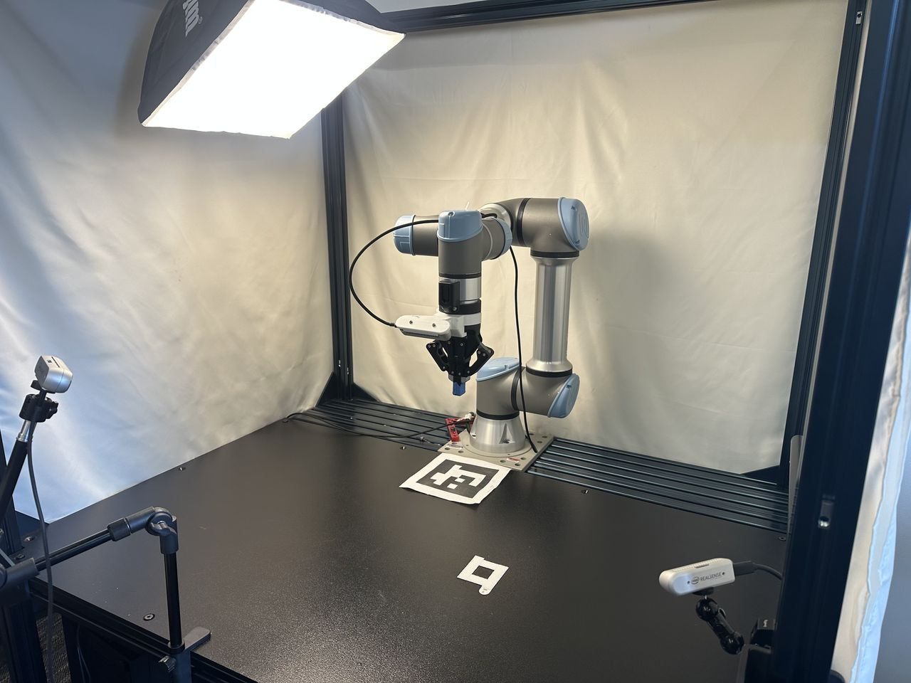
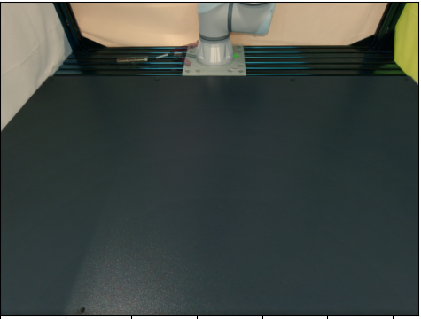
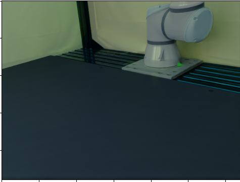
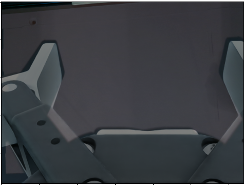

Sim2Real: SysID & RL Finetuning#
This guide bridges sim-to-real via system identification and policy finetuning. Finetuning uses a curriculum: sim dynamics shift toward your sys-id’d parameters (with higher OSC gains to compensate for friction, since policies do not train well under high friction from scratch), and action scale is reduced so the policy runs slower and transfers better to the real robot.
Our system identification follows the PACE framework by Bjelonic et al.
Important
Prerequisite: A trained RL policy from Collect Resets & Train RL Policy.
Pipeline overview#
Robot setup — UR5e/UR7e hardware config, robot calibration & USD, FK verification, metadata. Re-run reset state collection and RL training from Collect Resets & Train RL Policy (geometry-dependent). Install the diffusion_policy repo for real-robot control and sysid data collection.
System identification — Collect chirp on real robot, run CMA-ES in UWLab, verify fit, write sysid params to metadata, teleop to verify.
Finetune — Select best Stage-1 checkpoint, finetune with ADR, evaluate. Or use our pre-finetuned checkpoints (next section) if your setup matches ours.
Camera & hardware setup — Mount cameras (D415/D435/D455), print task objects, calibrate camera extrinsics.
Next — Distillation & Deployment for vision policy training and real-robot deployment.
Robot Setup#
Installing Diffusion Policy#
You need this codebase to control the real UR5e/UR7e. Real-robot deployment uses a separate conda environment (robodiff) so it does not conflict with Isaac Sim / UWLab. On Ubuntu, install RealSense SDK dependencies first if you will use cameras; see the Diffusion Policy README (use the omnireset branch).
Clone the repo as a sibling to UWLab (skip the clone if you already did this for Distillation & Deployment):
<parent_dir>/
UWLab/
diffusion_policy/
conda deactivate # exit env_uwlab if active
cd <parent_dir>
git clone -b omnireset https://github.com/WEIRDLabUW/diffusion_policy.git
cd diffusion_policy
mamba env create -f conda_environment_real.yaml # or: conda env create -f conda_environment_real.yaml
conda activate robodiff_real
python -m pip install -e .
UR5e/UR7e Setup#
The real UR5e/UR7e must be configured for external control (network, security, External Control URCap, Robotiq 2F-85 URCap). For step-by-step instructions, see the diffusion policy repo’s README_ur5e.md.
Robot Calibration & URDF#
Every UR5e/UR7e differs from the nominal model in link lengths, joint angles, and zero offsets, which compounds to significant end-effector error. To fix this, generate a calibrated URDF from your robot’s factory calibration and update the robot USD.
1. Extract calibration and generate calibrated URDF
Install ROS 2 and set up the UR robot driver following the NVIDIA Isaac ROS Universal Robots setup guide. Run their calibration script to extract your robot’s joint offsets into ur5e_calibration.yaml, then generate a calibrated URDF:
source /opt/ros/rolling/setup.bash
ros2 run xacro xacro \
/opt/ros/rolling/share/ur_description/urdf/ur.urdf.xacro \
ur_type:=ur5e \
name:=ur5e \
kinematics_params:=$HOME/ur5e_calibration.yaml \
> /path/to/ur5e_calibrated.urdf
sed 's|package://ur_description|/opt/ros/rolling/share/ur_description|g' \
/path/to/ur5e_calibrated.urdf \
> /path/to/ur5e_calibrated_absolute.urdf
2. Update the robot USD
Download the existing calibrated robot USD from here and open it in Isaac Sim. Replace the UR5e/UR7e arm in the USD with the URDF of your newly calibrated UR5e/UR7e. After replacing the arm, relink the joint that attaches the gripper to the arm. This joint connection must be re-established in Isaac Sim for the gripper to remain properly attached.
3. Verify alignment
Collect (joint_pos, ee_pose) pairs from the simulator using IK-based workspace sampling, then verify that the analytical FK in the real-world codebase reproduces those poses (< 0.01 mm error per dimension):
# In UWLab (env_uwlab)
conda activate env_uwlab
cd <parent_dir>/UWLab
python scripts_v2/tools/sim2real/collect_fk_pairs.py \
--num_samples 4 --output /tmp/fk_pairs.npz --headless
# In diffusion_policy (robodiff_real)
conda activate robodiff_real
cd <parent_dir>/diffusion_policy
python scripts/sim2real/test_fk_comparison.py --pairs /tmp/fk_pairs.npz
This verifies that the real-world analytical FK (ur5e_kinematics.py) matches the physics engine’s body transforms from the calibrated USD. A mismatch indicates a stale USD, wrong calibration constants, or a frame-convention bug.
4. Set up robot asset folder
Place the calibrated USD and a metadata.yaml side by side:
your_robot/
ur5e_robotiq_gripper_d415_mount_safety_calibrated.usd
metadata.yaml
Copy the base metadata.yaml from here and update the calibrated_joints (xyz/rpy) and link_inertials (masses/coms/inertias) sections with the values from your calibrated URDF. The sysid block will be filled in after system identification below.
5. Recollect reset states & retrain
With the new USD, re-run reset state collection and RL training from Collect Resets & Train RL Policy. The reset datasets are geometry-dependent, so they must be regenerated whenever the USD changes.
Tip
Gripper sanity check. Run a few open/close cycles on both the real and simulated gripper and compare the trajectories. If the real gripper is noticeably faster or slower than sim, tune the force and speed parameters in your real-world gripper config until the profiles roughly match.
Controller System Identification#
System identification calibrates simulation parameters (armature, friction, motor delay) to match your physical robot’s dynamics.
1. Collect real-world data
Run a chirp (frequency-sweep) trajectory on the real UR5e/UR7e under the calibrated OSC controller and record joint positions and target poses at 500 Hz:
conda activate robodiff_real
cd <parent_dir>/diffusion_policy
python scripts/sim2real/collect_sysid_data.py \
--robot_ip 192.168.1.10 \
--output /tmp/sysid_data_real.pt \
--duration 8 --f0 0.1 --f1 3.0
2. Run system identification
Use CMA-ES to optimize simulator dynamics parameters (armature, friction, motor delay) so the simulated trajectory matches the real one:
conda activate env_uwlab
cd <parent_dir>/UWLab
python scripts_v2/tools/sim2real/sysid_ur5e_osc.py --headless \
--num_envs 512 \
--real_data /tmp/sysid_data_real.pt \
--max_iter 200
3. Verify the fit
Plot simulated vs. real joint trajectories using the best checkpoint:
python scripts_v2/tools/sim2real/plot_sysid_fit.py --headless \
--checkpoint logs/sysid/<timestamp>/checkpoint_0200.pt \
--real_data /tmp/sysid_data_real.pt
Inspect the overlay plots. A good fit should show close tracking across all joints (less than 2° RMSE per joint):
{kind=link}

4. Save parameters
Replace the sysid block in metadata.yaml (next to your robot USD) with the identified values for armature, static_friction, dynamic_ratio, and viscous_friction. These are loaded automatically during finetuning and evaluation. See the current calibrated robot’s metadata.yaml for reference.
5. Teleop to verify motion
Teleop the real robot and confirm it moves sensibly (no stalling or sluggish tracking). If it stalls, increase OSC gains. For Mello setup (calibrate, stream, test connection), see the diffusion policy repo’s README_ur5e.md. From the diffusion_policy repo root:
conda activate robodiff_real
cd <parent_dir>/diffusion_policy
python demo_real_robot.py -o <output_dir> --robot_ip <ur5e_ip>
To tune gains if the arm lags or stalls, add --osc_kp_pos and --osc_kp_rot.
Select Best Checkpoint & Finetune with ADR#
Either run the pipeline below or use our pre-finetuned checkpoints (next section) if your setup matches ours. Some policies transfer better than others. As an offline proxy, evaluate candidate checkpoints under action noise and pick the one with the highest success rate, then finetune it with ADR (Automatic Domain Randomization). Finetuning uses the identified sysid parameters as the center of a randomization range that ADR automatically expands, producing a policy robust to real-world variation.
ADR shifts the training distribution from zero friction, armature, and motor delay toward a randomization band around the sys-id’d values. OSC gains increase to compensate for higher friction. Action scale is reduced over the curriculum to slow the policy down for safer real-world transfer.
Minimum env counts for stable finetuning: Peg 4096 (1 GPU), Leg 16384 per GPU (4 GPUs, 65536 total), Drawer 8192 (1 GPU). Download Stage 1 checkpoints from OmniReset and pass them via --resume_path.
All commands below run in the env_uwlab environment from the UWLab directory:
conda activate env_uwlab
cd <parent_dir>/UWLab
Select best checkpoint
python scripts_v2/tools/sim2real/eval_robustness.py \
--task OmniReset-Ur5eRobotiq2f85-RelCartesianOSC-State-Play-v0 \
--checkpoints ckpt_seed1.pt ckpt_seed2.pt ckpt_seed3.pt \
--action_noise 2.0 \
--eval_steps 1000 \
--num_envs 4096 \
--headless \
env.scene.insertive_object=peg \
env.scene.receptive_object=peghole
Train (4096 envs, 1 GPU)
python scripts/reinforcement_learning/rsl_rl/train.py \
--task OmniReset-Ur5eRobotiq2f85-RelCartesianOSC-State-Finetune-v0 \
--num_envs 4096 \
--logger wandb \
--headless \
--resume_path <stage1_checkpoint.pt> \
env.scene.insertive_object=peg \
env.scene.receptive_object=peghole
Evaluate
python scripts/reinforcement_learning/rsl_rl/play.py \
--task OmniReset-Ur5eRobotiq2f85-RelCartesianOSC-State-Finetune-Play-v0 \
--num_envs 1 \
--checkpoint <finetuned_checkpoint.pt> \
env.scene.insertive_object=peg \
env.scene.receptive_object=peghole
Finetuning Curves
{kind=link}
{kind=link}
Select best checkpoint
python scripts_v2/tools/sim2real/eval_robustness.py \
--task OmniReset-Ur5eRobotiq2f85-RelCartesianOSC-State-Play-v0 \
--checkpoints ckpt_seed1.pt ckpt_seed2.pt ckpt_seed3.pt \
--action_noise 2.0 \
--eval_steps 1000 \
--num_envs 4096 \
--headless \
env.scene.insertive_object=fbleg \
env.scene.receptive_object=fbtabletop
Train (16384 envs per GPU × 4 GPUs)
python -m torch.distributed.run \
--nnodes 1 \
--nproc_per_node 4 \
scripts/reinforcement_learning/rsl_rl/train.py \
--task OmniReset-Ur5eRobotiq2f85-RelCartesianOSC-State-Finetune-v0 \
--num_envs 16384 \
--logger wandb \
--headless \
--distributed \
--resume_path <stage1_checkpoint.pt> \
env.scene.insertive_object=fbleg \
env.scene.receptive_object=fbtabletop
Evaluate
python scripts/reinforcement_learning/rsl_rl/play.py \
--task OmniReset-Ur5eRobotiq2f85-RelCartesianOSC-State-Finetune-Play-v0 \
--num_envs 1 \
--checkpoint <finetuned_checkpoint.pt> \
env.scene.insertive_object=fbleg \
env.scene.receptive_object=fbtabletop
Finetuning Curves
{kind=link}
{kind=link}
Select best checkpoint
python scripts_v2/tools/sim2real/eval_robustness.py \
--task OmniReset-Ur5eRobotiq2f85-RelCartesianOSC-State-Play-v0 \
--checkpoints ckpt_seed1.pt ckpt_seed2.pt ckpt_seed3.pt \
--action_noise 2.0 \
--eval_steps 1000 \
--num_envs 4096 \
--headless \
env.scene.insertive_object=fbdrawerbottom \
env.scene.receptive_object=fbdrawerbox
Train (8192 envs, 1 GPU)
python scripts/reinforcement_learning/rsl_rl/train.py \
--task OmniReset-Ur5eRobotiq2f85-RelCartesianOSC-State-Finetune-v0 \
--num_envs 8192 \
--logger wandb \
--headless \
--resume_path <stage1_checkpoint.pt> \
env.scene.insertive_object=fbdrawerbottom \
env.scene.receptive_object=fbdrawerbox
Evaluate
python scripts/reinforcement_learning/rsl_rl/play.py \
--task OmniReset-Ur5eRobotiq2f85-RelCartesianOSC-State-Finetune-Play-v0 \
--num_envs 1 \
--checkpoint <finetuned_checkpoint.pt> \
env.scene.insertive_object=fbdrawerbottom \
env.scene.receptive_object=fbdrawerbox
Finetuning Curves
{kind=link}
{kind=link}
Use our finetuned checkpoints#
Pre-finetuned for our robot calibration and sys-id’d parameters. If your setup is similar, you can download and run these instead of finetuning yourself.
All commands below run in env_uwlab from the UWLab directory.
wget https://huggingface.co/datasets/UW-Lab/uwlab-assets/resolve/main/Policies/OmniReset/state_based_experts_finetuned/peg_state_rl_expert_finetuned_seed42.pt
python scripts/reinforcement_learning/rsl_rl/play.py \
--task OmniReset-Ur5eRobotiq2f85-RelCartesianOSC-State-Finetune-Play-v0 \
--num_envs 1 \
--checkpoint peg_state_rl_expert_finetuned_seed42.pt \
env.scene.insertive_object=peg \
env.scene.receptive_object=peghole
wget https://huggingface.co/datasets/UW-Lab/uwlab-assets/resolve/main/Policies/OmniReset/state_based_experts_finetuned/peg_state_rl_expert_finetuned_seed0.pt
python scripts/reinforcement_learning/rsl_rl/play.py \
--task OmniReset-Ur5eRobotiq2f85-RelCartesianOSC-State-Finetune-Play-v0 \
--num_envs 1 \
--checkpoint peg_state_rl_expert_finetuned_seed0.pt \
env.scene.insertive_object=peg \
env.scene.receptive_object=peghole
wget https://huggingface.co/datasets/UW-Lab/uwlab-assets/resolve/main/Policies/OmniReset/state_based_experts_finetuned/peg_state_rl_expert_finetuned_seed1.pt
python scripts/reinforcement_learning/rsl_rl/play.py \
--task OmniReset-Ur5eRobotiq2f85-RelCartesianOSC-State-Finetune-Play-v0 \
--num_envs 1 \
--checkpoint peg_state_rl_expert_finetuned_seed1.pt \
env.scene.insertive_object=peg \
env.scene.receptive_object=peghole
wget https://huggingface.co/datasets/UW-Lab/uwlab-assets/resolve/main/Policies/OmniReset/state_based_experts_finetuned/leg_state_rl_expert_finetuned_seed42.pt
python scripts/reinforcement_learning/rsl_rl/play.py \
--task OmniReset-Ur5eRobotiq2f85-RelCartesianOSC-State-Finetune-Play-v0 \
--num_envs 1 \
--checkpoint leg_state_rl_expert_finetuned_seed42.pt \
env.scene.insertive_object=fbleg \
env.scene.receptive_object=fbtabletop
wget https://huggingface.co/datasets/UW-Lab/uwlab-assets/resolve/main/Policies/OmniReset/state_based_experts_finetuned/leg_state_rl_expert_finetuned_seed0.pt
python scripts/reinforcement_learning/rsl_rl/play.py \
--task OmniReset-Ur5eRobotiq2f85-RelCartesianOSC-State-Finetune-Play-v0 \
--num_envs 1 \
--checkpoint leg_state_rl_expert_finetuned_seed0.pt \
env.scene.insertive_object=fbleg \
env.scene.receptive_object=fbtabletop
wget https://huggingface.co/datasets/UW-Lab/uwlab-assets/resolve/main/Policies/OmniReset/state_based_experts_finetuned/leg_state_rl_expert_finetuned_seed1.pt
python scripts/reinforcement_learning/rsl_rl/play.py \
--task OmniReset-Ur5eRobotiq2f85-RelCartesianOSC-State-Finetune-Play-v0 \
--num_envs 1 \
--checkpoint leg_state_rl_expert_finetuned_seed1.pt \
env.scene.insertive_object=fbleg \
env.scene.receptive_object=fbtabletop
wget https://huggingface.co/datasets/UW-Lab/uwlab-assets/resolve/main/Policies/OmniReset/state_based_experts_finetuned/drawer_state_rl_expert_finetuned_seed42.pt
python scripts/reinforcement_learning/rsl_rl/play.py \
--task OmniReset-Ur5eRobotiq2f85-RelCartesianOSC-State-Finetune-Play-v0 \
--num_envs 1 \
--checkpoint drawer_state_rl_expert_finetuned_seed42.pt \
env.scene.insertive_object=fbdrawerbottom \
env.scene.receptive_object=fbdrawerbox
wget https://huggingface.co/datasets/UW-Lab/uwlab-assets/resolve/main/Policies/OmniReset/state_based_experts_finetuned/drawer_state_rl_expert_finetuned_seed0.pt
python scripts/reinforcement_learning/rsl_rl/play.py \
--task OmniReset-Ur5eRobotiq2f85-RelCartesianOSC-State-Finetune-Play-v0 \
--num_envs 1 \
--checkpoint drawer_state_rl_expert_finetuned_seed0.pt \
env.scene.insertive_object=fbdrawerbottom \
env.scene.receptive_object=fbdrawerbox
wget https://huggingface.co/datasets/UW-Lab/uwlab-assets/resolve/main/Policies/OmniReset/state_based_experts_finetuned/drawer_state_rl_expert_finetuned_seed1.pt
python scripts/reinforcement_learning/rsl_rl/play.py \
--task OmniReset-Ur5eRobotiq2f85-RelCartesianOSC-State-Finetune-Play-v0 \
--num_envs 1 \
--checkpoint drawer_state_rl_expert_finetuned_seed1.pt \
env.scene.insertive_object=fbdrawerbottom \
env.scene.receptive_object=fbdrawerbox
Camera & Hardware Setup#
We use a three-camera setup with Intel RealSense depth cameras:
Wrist camera — D415 mounted on the Robotiq 2F-85 gripper via a 3D-printed bracket.
Two third-person cameras — D435 and D455 on tripods, providing front and side views.
Any combination of D415 / D435 / D455 works for any of the three viewpoints (the D455 has a wider baseline and higher depth quality, so prefer it when available).
{kind=link}

Example three-camera setup: D415 on wrist, D455 front, D435 side.#
3D-printed assets
Download the STL files below and print them on any 3D printer. Higher infill (e.g. 80 %) helps the parts last longer under repeated contact; lower infill works but you may need to reprint more often.
Part |
Download |
|---|---|
D415 wrist-camera mount (Robotiq 2F-85) |
|
Peg insertion task |
|
Leg twisting task (based on FurnitureBench) |
|
Drawer assembly task (based on FurnitureBench) |
Calibrate Cameras#
Virtual cameras in simulation must match your real camera poses and intrinsics so the distilled policy transfers to real RGB observations.
Prerequisites
The calibration workflow switches between two environments:
robodiff_realfor real-robot scripts (Step 1) andenv_uwlabfor UWLab simulation scripts (Step 2). Set uprobodiff_realin Installing Diffusion Policy above.Print an ArUco marker — the calibration scripts use dictionary 6x6_50, marker ID 12, printed at 150 mm. Download the printable PDF:
marker_6x6_150mm_id12.pdf.Place the printed marker flat on the table near the robot base (see the camera setup photo above for an example placement). Measure the offset (in meters) from the marker center to the robot base-frame origin and update
aruco_offsetin0_camera_calibrate.py. If you place the marker in the same position as our setup photo, the default[0.24, 0.0, 0.0]should work.Record the robot’s joint angles (in degrees) at the pose used for the reference image. You can read them from the UR teach pendant or from
1_camera_get_rgb.pyoutput. Pass them toalign_cameras.pyvia--joint_anglesso the simulated robot matches the real pose.
Tip
Wrist camera calibration: Put the UR5e/UR7e into zero-gravity (freedrive) mode and manually position the arm so the wrist camera has a clear view of the ArUco marker.
Calibration workflow
Calibrate one camera at a time. For each camera: (a) run ArUco calibration and capture a reference RGB on the real robot, (b) convert extrinsics, (c) interactively align the sim camera to the real image, then (d) paste the result into the config. Unplug all other cameras while calibrating one.
Real-world scripts live in the diffusion_policy repo (omnireset branch) under scripts/sim2real/. The interactive alignment tool lives in UWLab.
Step 1 — Calibrate & capture (diffusion_policy, robodiff_real)
conda activate robodiff_real
cd <parent_dir>/diffusion_policy
python scripts/sim2real/0_camera_calibrate.py
python scripts/sim2real/1_camera_get_rgb.py
python scripts/sim2real/2_get_isaacsim_extrinsics.py
Copy the pos, rot, and focal_length printed by 2_get_isaacsim_extrinsics.py into the corresponding front_camera entry in camera_align_cfg.py as the initial guess for interactive alignment.
Step 2 — Interactive alignment (UWLab, env_uwlab)
conda activate env_uwlab
cd <parent_dir>/UWLab
python scripts_v2/tools/sim2real/align_cameras.py \
--enable_cameras \
--headless \
--camera front_camera \
--real_image /path/to/real_front.png \
--joint_angles <j1> <j2> <j3> <j4> <j5> <j6>
Replace <j1> … <j6> with the real robot’s joint angles in degrees at the pose used when capturing the reference image.
Press p to print the calibrated pos, rot, and focal_length.
{kind=link}

Sample aligned sim-to-real blend (50% opacity).#
Step 1 — Calibrate & capture (diffusion_policy, robodiff_real)
conda activate robodiff_real
cd <parent_dir>/diffusion_policy
python scripts/sim2real/0_camera_calibrate.py
python scripts/sim2real/1_camera_get_rgb.py
python scripts/sim2real/2_get_isaacsim_extrinsics.py
Copy the pos, rot, and focal_length printed by 2_get_isaacsim_extrinsics.py into the corresponding side_camera entry in camera_align_cfg.py as the initial guess for interactive alignment.
Step 2 — Interactive alignment (UWLab, env_uwlab)
conda activate env_uwlab
cd <parent_dir>/UWLab
python scripts_v2/tools/sim2real/align_cameras.py \
--enable_cameras \
--headless \
--camera side_camera \
--real_image /path/to/real_side.png \
--joint_angles <j1> <j2> <j3> <j4> <j5> <j6>
Replace <j1> … <j6> with the real robot’s joint angles in degrees.
Press p to print the calibrated pos, rot, and focal_length.
{kind=link}

Sample aligned sim-to-real blend (50% opacity).#
Step 1 — Calibrate & capture (diffusion_policy, robodiff_real)
conda activate robodiff_real
cd <parent_dir>/diffusion_policy
python scripts/sim2real/0_camera_calibrate.py
python scripts/sim2real/1_camera_get_rgb.py
python scripts/sim2real/2_get_isaacsim_extrinsics.py
Copy the pos, rot, and focal_length printed by 2_get_isaacsim_extrinsics.py into the corresponding wrist_camera entry in camera_align_cfg.py as the initial guess for interactive alignment.
Step 2 — Interactive alignment (UWLab, env_uwlab)
conda activate env_uwlab
cd <parent_dir>/UWLab
python scripts_v2/tools/sim2real/align_cameras.py \
--enable_cameras \
--headless \
--camera wrist_camera \
--real_image /path/to/real_wrist.png \
--joint_angles <j1> <j2> <j3> <j4> <j5> <j6>
Replace <j1> … <j6> with the real robot’s joint angles in degrees.
Press p to print the calibrated pos, rot, and focal_length.
{kind=link}

Sample aligned sim-to-real blend (50% opacity).#
Update config
After aligning each camera, paste the resulting pos, rot, and focal_length into data_collection_rgb_cfg.py:
source/uwlab_tasks/.../omnireset/config/ur5e_robotiq_2f85/data_collection_rgb_cfg.py
Update the TiledCameraCfg entries (front_camera, side_camera, wrist_camera) with the calibrated values. Also update the corresponding base_position and base_rotation in the randomization events (randomize_front_camera, randomize_side_camera, randomize_wrist_camera) to match.
With calibrated cameras, proceed to Distillation & Deployment to collect RGB demos, train a vision policy, evaluate in sim, and deploy on the real robot.
Citations#
If you use the system identification pipeline, please cite PACE. If you use the ADR finetuning, please also cite OpenAI’s ADR work. The leg-twisting and drawer-assembly tasks are based on FurnitureBench. For real-robot deployment and the diffusion_policy codebase, cite Diffusion Policy:
@misc{chi2024diffusionpolicyvisuomotorpolicy,
title={Diffusion Policy: Visuomotor Policy Learning via Action Diffusion},
author={Cheng Chi and Zhenjia Xu and Siyuan Feng and Eric Cousineau and Yilun Du and Benjamin Burchfiel and Russ Tedrake and Shuran Song},
year={2024},
eprint={2303.04137},
archivePrefix={arXiv},
primaryClass={cs.RO},
url={https://arxiv.org/abs/2303.04137},
}
@article{bjelonic2025towards,
title = {Towards Bridging the Gap: Systematic Sim-to-Real Transfer for Diverse Legged Robots},
author = {Bjelonic, Filip and Tischhauser, Fabian and Hutter, Marco},
journal = {arXiv preprint arXiv:2509.06342},
year = {2025},
eprint = {2509.06342},
archivePrefix = {arXiv},
primaryClass = {cs.RO},
}
@misc{heo2023furniturebenchreproduciblerealworldbenchmark,
title={FurnitureBench: Reproducible Real-World Benchmark for Long-Horizon Complex Manipulation},
author={Minho Heo and Youngwoon Lee and Doohyun Lee and Joseph J. Lim},
year={2023},
eprint={2305.12821},
archivePrefix={arXiv},
primaryClass={cs.RO},
url={https://arxiv.org/abs/2305.12821},
}
@article{akkaya2019solving,
title = {Solving Rubik's Cube with a Robot Hand},
author = {Akkaya, Ilge and Andrychowicz, Marcin and Chociej, Maciek and Litwin, Mateusz and McGrew, Bob and Petron, Arthur and Paino, Alex and Plappert, Matthias and Powell, Glenn and Ribas, Raphael and others},
journal = {arXiv preprint arXiv:1910.07113},
year = {2019},
eprint = {1910.07113},
archivePrefix = {arXiv},
primaryClass = {cs.LG},
}